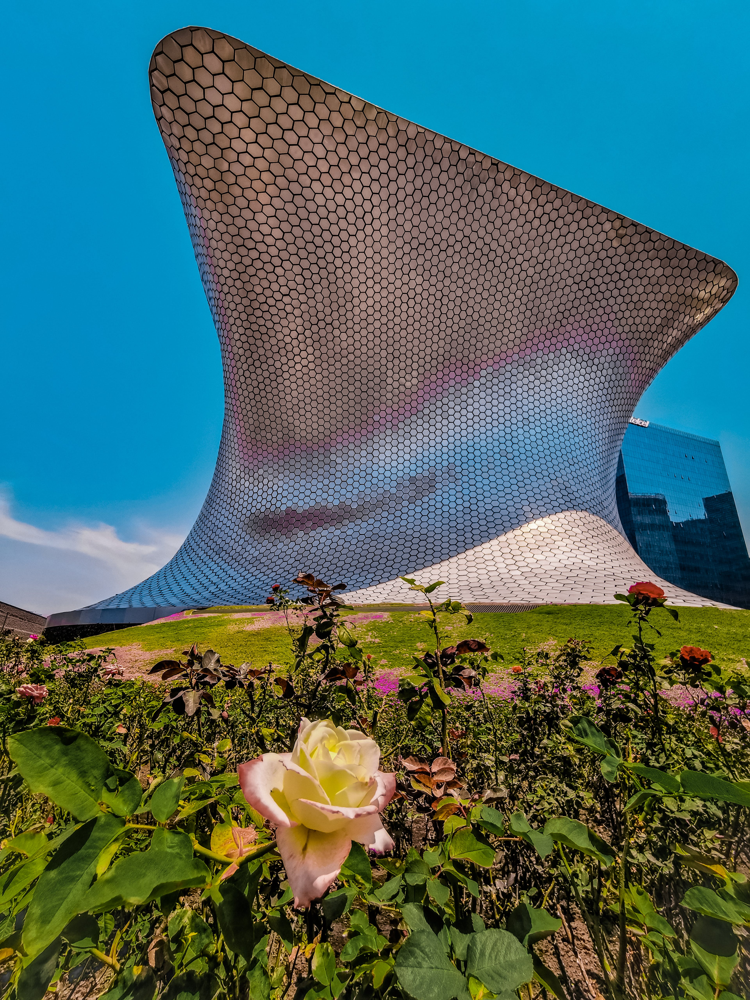
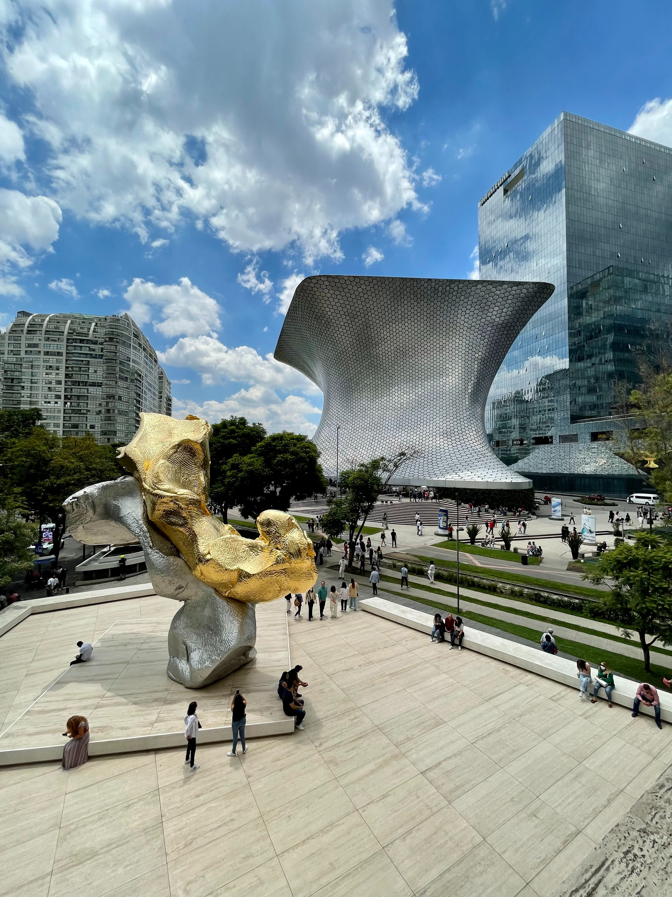
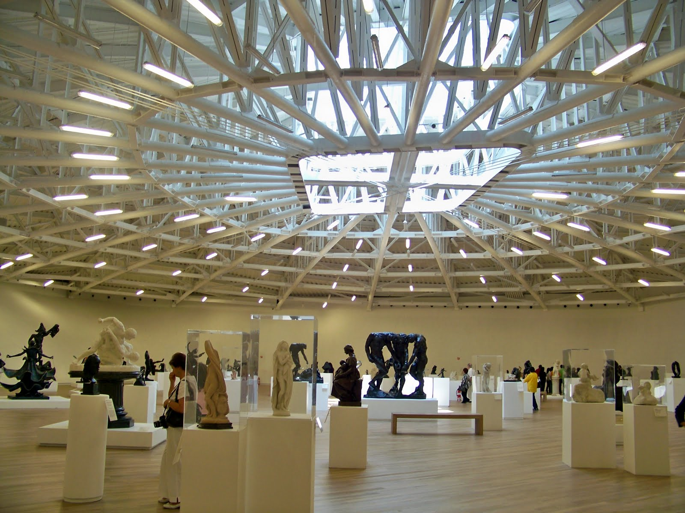
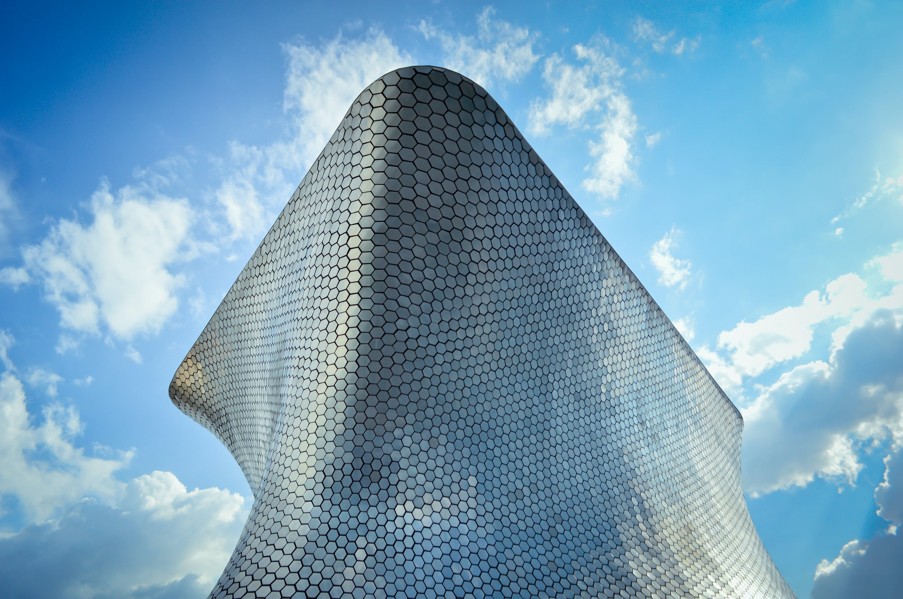

Disfruta

Admira

Relájate

Descubre
El Museo Soumaya te ofrece una experiencia cultural completa. Explora una colección de más de 66,000 obras de arte que abarcan desde la antigüedad hasta expresiones artísticas contemporáneas, admirando obras maestras de renombrados artistas. Participa en eventos culturales y educativos, asiste a conciertos y descubre la riqueza de conocimiento en charlas especializadas. Admira la arquitectura del edificio, diseñado por Fernando Romero, además de las vistas panorámicas únicas de la ciudad. Relájate en la Plaza Carso, un espacio aledaño lleno de tiendas y restaurantes. ¡Tu viaje cultural empieza en el Museo Soumaya, donde cada visita es una nueva aventura artística!
Fotografías
Arte
Conocimiento
Cultura
Música